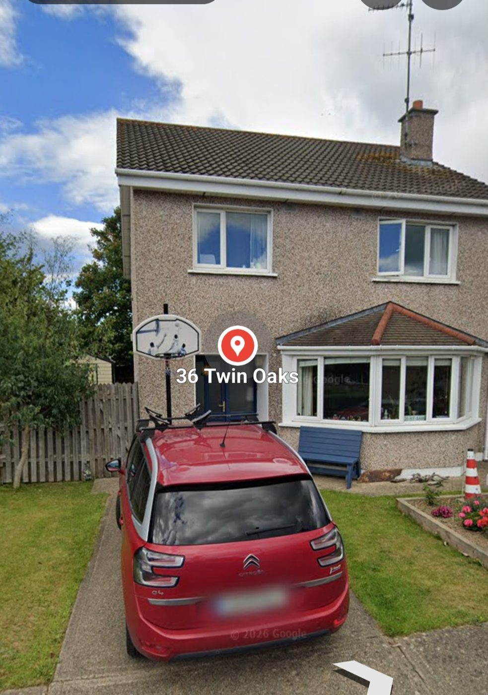
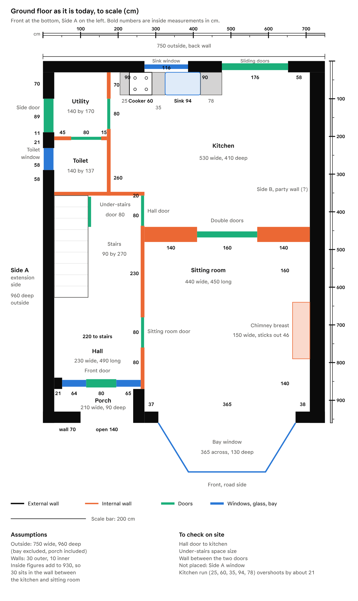
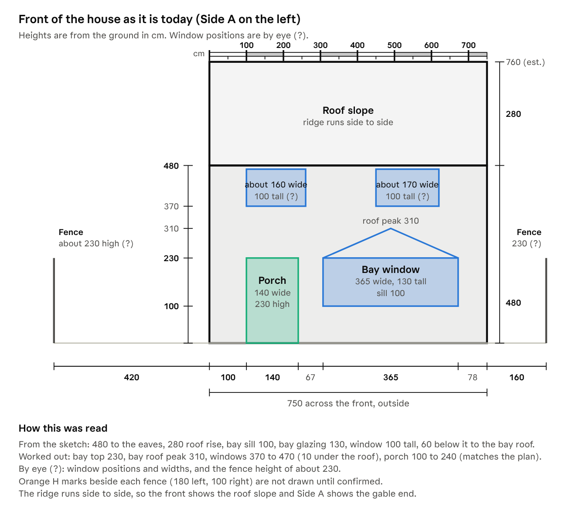
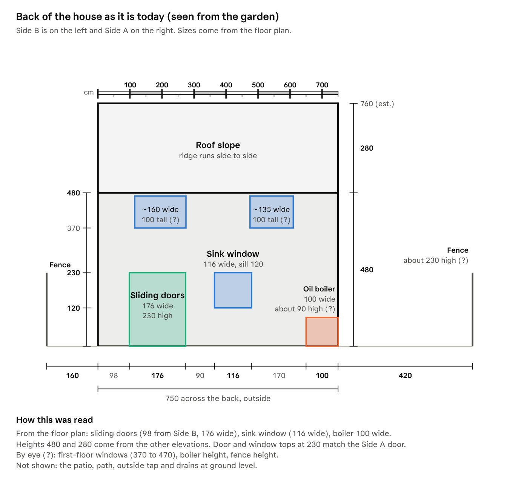
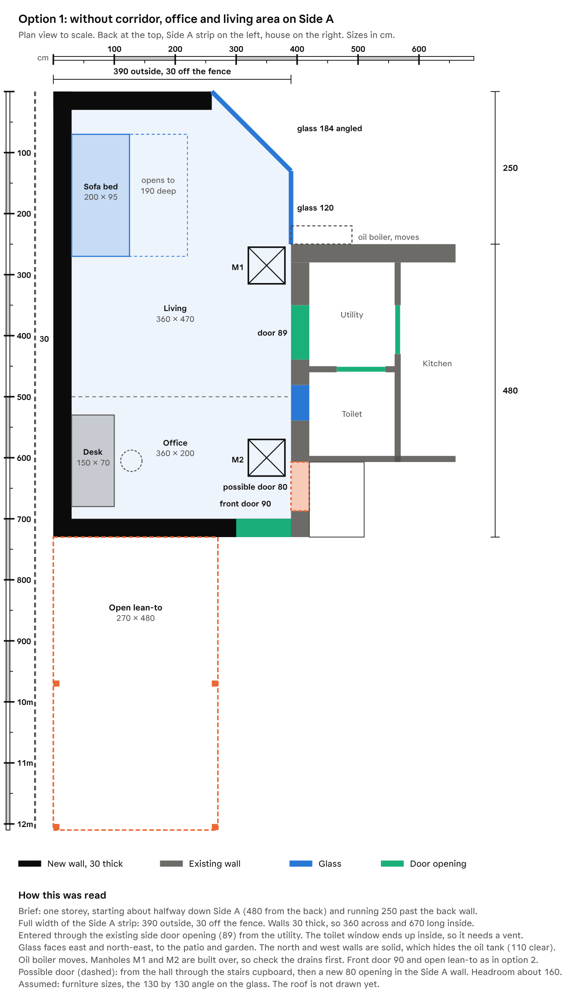
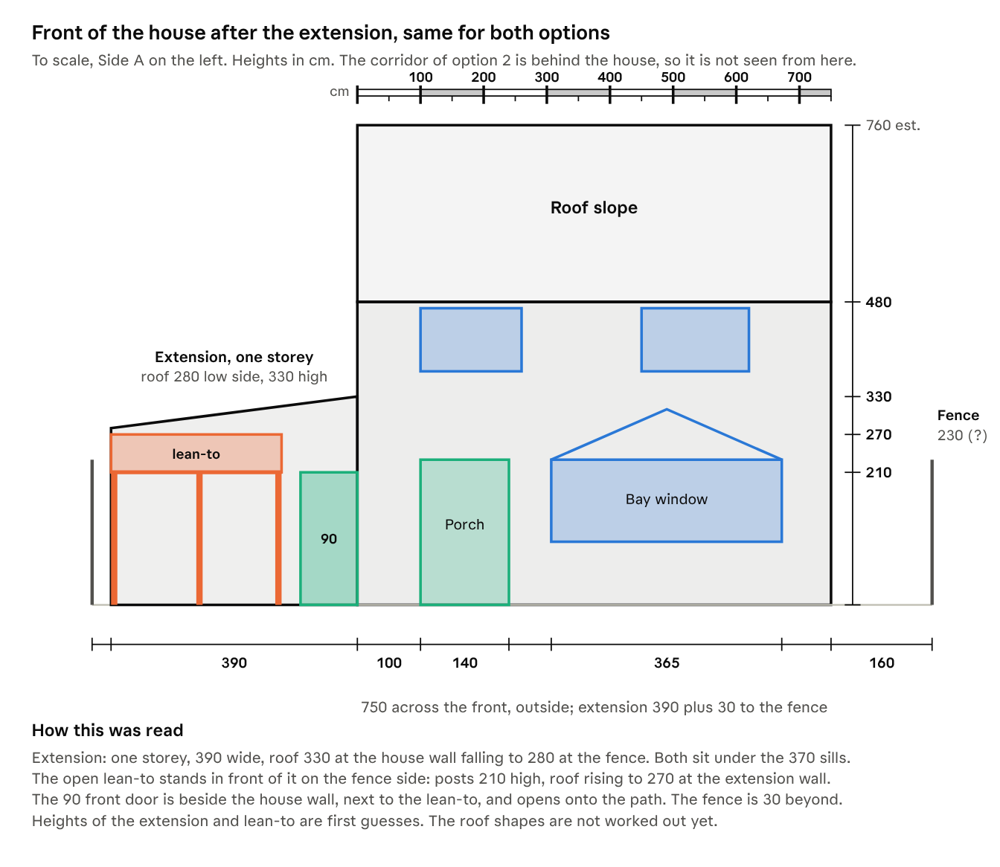
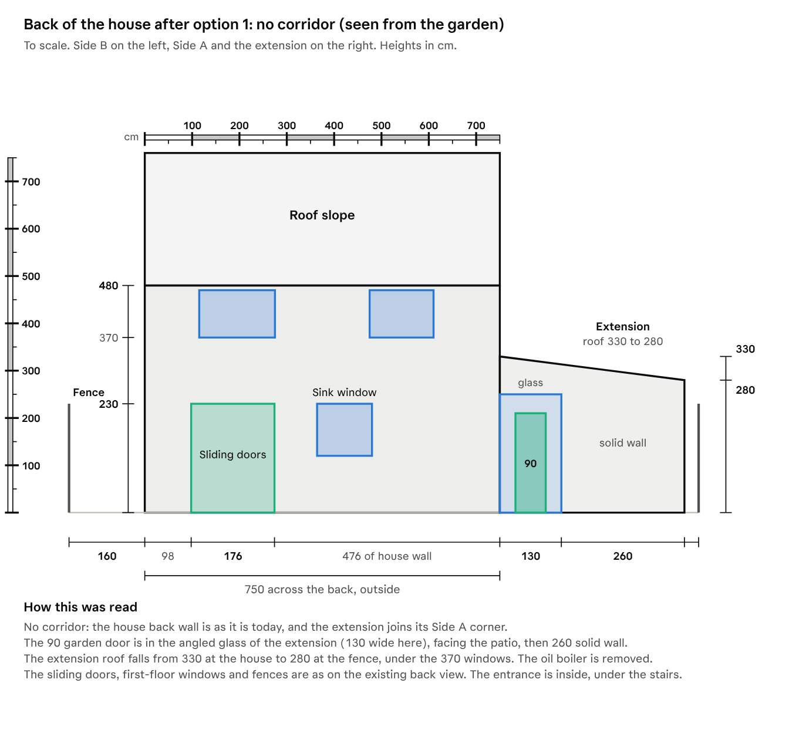
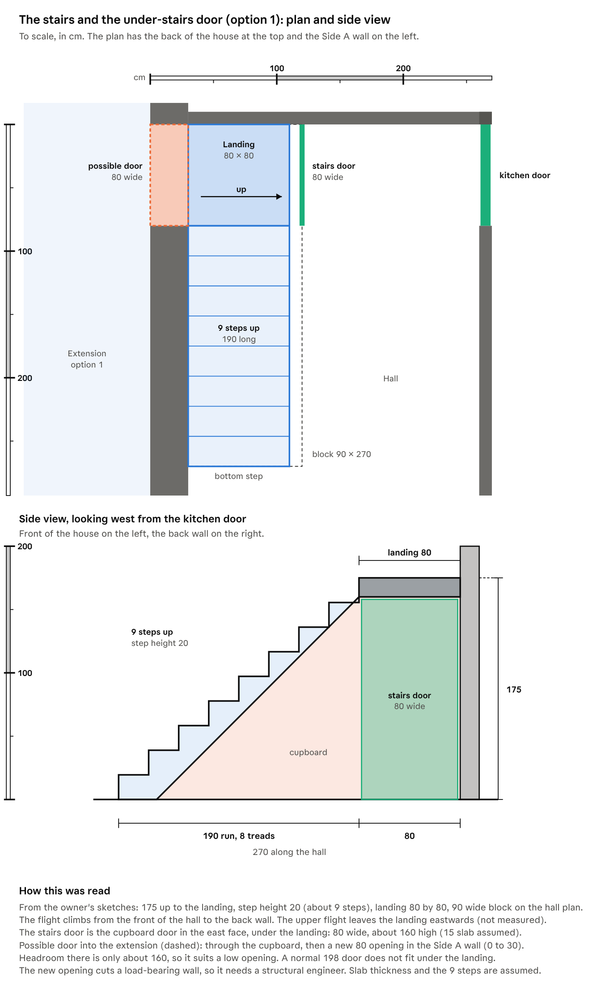
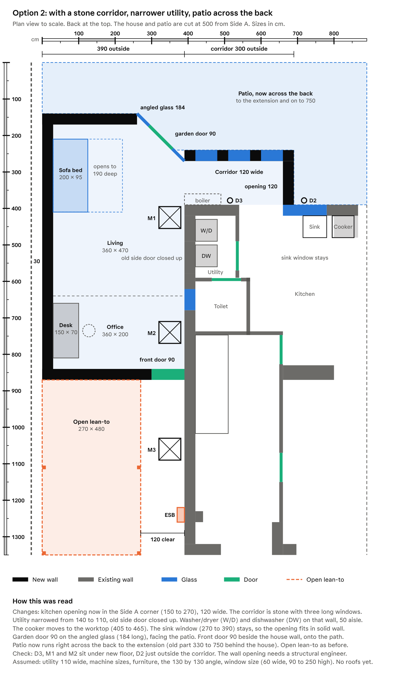
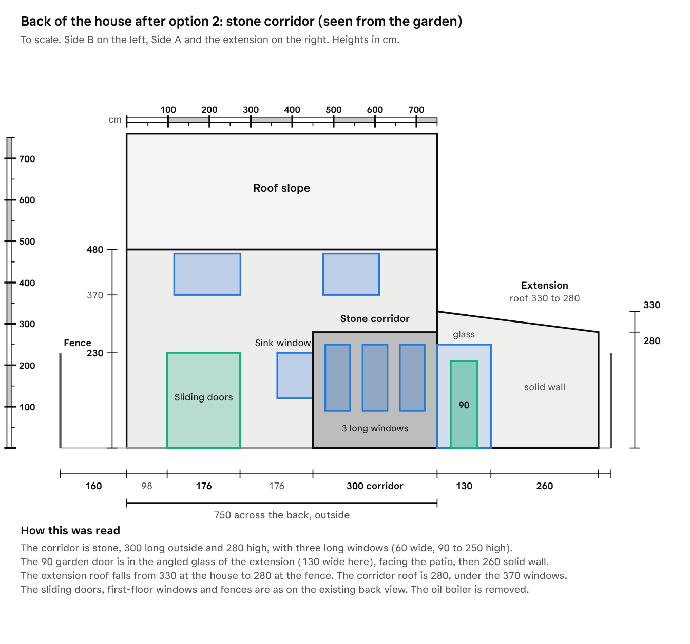

36 Twin Oaks - Extension options for the builder

Two options for a single-storey extension on Side A of the house (the left side when facing the front). Section 1 shows the house as it is today, section 2 is option 1 (without corridor) and section 3 is option 2 (with corridor). Each has its plan and the front and back views. All sizes are in centimetres; sizes marked (?) are estimates still to be confirmed.
1. The house as it is today
- House 750 wide by 960 deep outside, two storeys, eaves 480, ridge about 760 (estimate).
- Side A strip is 420 wide from the house to the boundary fence, including a 90 path.
- Stairs: 175 up to an 80 by 80 middle landing, step height 20. The under-stairs cupboard door is 80 wide and about 160 high (?).
- Kitchen is 530 by 410, with the utility (140 by 170) and toilet (140 by 137) behind the hall on the Side A side.
- Services on the Side A side: oil boiler at the back corner, manholes M1, M2 and M3 along the wall, drains D2 and D3 at the back, electricity box (ESB) 90 from the front corner.



What both options share
- One storey, 390 wide outside (30 off the fence), 730 long: it starts 480 from the back of the house and runs 250 past the back wall. Walls 30 thick, so about 360 by 670 inside.
- Office at the front end and a living area behind it with room for a sofa bed, glass facing the patio and garden, and a solid wall on the fence side so the oil tank and shed are out of view.
- Angled glass at the back corner (184 long) with a 90 garden door, and the patio extended across the back to meet it.
- Open wooden lean-to, 270 wide by 480 long, in the 480 gap between the extension and the front of the house, with a 90 front door to the extension beside the house wall.
- The oil boiler is removed and moved, and manholes M1 and M2 (and drain D3) end up under the new floor. These need checking and probably relocating.
2. Option 1: without corridor
- Entrance: the existing side door opening from the utility (89 wide), as today. A second way in is possible through the under-stairs cupboard (door 80 wide) and a new 80 opening in the Side A wall.
- Headroom under the landing is only about 160 (?), so this is a low opening. A normal 198 door does not fit.
- The opening cuts a load-bearing wall and needs a structural engineer.
- The utility, toilet and kitchen stay as they are, so the washing machines stay behind their own door.
- Floor area: about 24 square metres inside.




3. Option 2: with stone corridor
- Kitchen opening 120 wide in the Side A corner of the back wall (150 to 270 from Side A). The cooker moves along the worktop to 405 to 465 and the sink window (270 to 390) stays.
- Utility narrowed from 140 to 110 wide, so the opening fits in solid wall. The old side door is closed up and the washer/dryer and dishwasher go on that wall.
- Corridor 120 wide and 300 long outside, in stone, with three long windows (60 wide, 90 to 250 high).
- The corridor joins the extension at its back corner. The 90 garden door is on the angled glass.
- No entrance from the stairs cupboard.
- Floor area: about 24 square metres in the extension plus 2.5 in the corridor, about 27 square metres inside.
- The kitchen opening and the stone corridor need a structural engineer.


Side by side
| Item | Option 1: under the stairs | Option 2: stone corridor |
|---|---|---|
| Entrance | Existing utility side door, plus a possible opening under the stairs (headroom about 160) | New 120 opening from the kitchen and a stone corridor |
| Kitchen and utility | Unchanged | Cooker moves, utility narrowed to 110, old side door closed |
| Extra floor area | None | About 2.5 square metres of corridor |
| Main structural work | One opening in the Side A wall under the stairs | One opening in the kitchen back wall and a stone corridor |
| Washing machines | Stay where they are | Move to the narrowed utility's back wall |
| Daylight | Extension glass only | Extension glass plus three corridor windows |
Things to check before pricing
- Drains: D2 and D3 and manholes M1 and M2 under the new floors. Can they be moved, covered or raised?
- Oil boiler and tank: new boiler position and new pipe runs, and the tank clearance.
- Structural engineer for the new openings, the stone corridor and the roof spans.
- Roof: not drawn yet. Extension roof assumed 330 at the house wall falling to 280 at the fence, below the 370 first-floor window sills. Lean-to 210 to 270.
- Toilet window (on Side A, 120 sill, 58 wide) ends up inside the extension and needs a vent or relocation.
- Electricity box (ESB) clearance and access in the lean-to area.
- Planning and building regulations: boundary distance (30 to the fence), height, glazing and the lean-to.
- Confirm: fence height (about 230 (?)), upper stair flight direction, first-floor window positions, and the kitchen worktop run (overshoots by about 21).
Assumptions in these drawings
Wall thickness 30 outer and 10 inner, the ridge height 760, furniture sizes (desk 150 by 70, sofa bed 200 by 95), the 130 by 130 angle on the corner glass and the corridor window sizes are all estimates until confirmed on site.